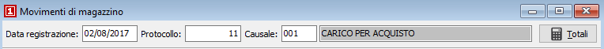
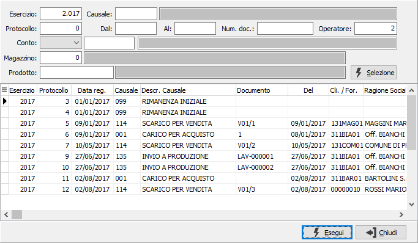

Introduzione
Il programma di gestione prima nota si articola su due finestre video. La prima finestra, Dati generali, oltre alla data di registrazione contiene tutte le indicazioni relative al documento che giustifica il movimento stesso.
La finestra video è comune per tutte le causali; tuttavia l’etichetta che descrive alcuni campi può avere di volta in volta descrizioni diverse. Il caso più comune è costituito dal campo destinato a contenere, a seconda dei casi, il codice del cliente o del fornitore: l’etichetta cambia appunto la descrizione fornitore o cliente a in funzione della causale utilizzata.
La numerazione dei movimenti di magazzino segue la logica già illustrata per i movimenti contabili: a conferma della data presentata o inserita, viene visualizzato il numero di protocollo del movimento relativo all’esercizio a cui appartiene la data di registrazione. Tale numero deve intendersi come numero di movimento di prima nota. L’eventuale cancellazione del movimento di magazzino non recupera il numero cancellato.
Accedendo al programma, si presenta la prima sezione video:

Al momento del primo accesso al programma, lo stesso si situa in modalità di Visualizzazione e presenta a video l’ultimo movimento di magazzino inserito oppure una maschera vuota se previsto da configurazione di non visualizzare nessun movimento all'avvio.
Il cursore si posiziona sul campo data registrazione destinato a contenere la data di registrazione del movimento di magazzino. Viene automaticamente proposta la data di sistema.
Su questo campo l’utente deve definire il tipo di azione che intende compiere. In altre parole, deve decidere se inserire nuovi movimenti di magazzino, se visualizzare movimenti esistenti, se modificare movimenti esistenti o se cancellare movimenti esistenti. L’azione da compiere può essere comandata tramite la pressione di alcuni pulsanti della tool bar o tramite l’uso dei corrispondenti tasti funzione, secondo le seguenti modalità:
Ricerca e visualizzazione di un movimento di magazzino
Sul campo “data”, in modalità di visualizzazione, per effettuare la ricerca di un movimento di magazzino è possibile agire sui pulsanti “frecce” della tool bar. Cliccando su freccia a sinistra si potranno visualizzare sequenzialmente i movimenti precedenti, mentre cliccando su freccia a destra si potranno visualizzare i movimenti successivi.
Ovviamente il metodo illustrato è utile per la ricerca di movimenti “vicini” a quello presente a video, ma è improponibile in presenza di consistenti quantità di movimenti.
In questi casi, cliccando due volte sul campo “data” o agendo sul pulsante Zoom, è possibile determinare l’apertura della finestra video di Ricerca movimenti di magazzino.

La finestra video di Ricerca movimento di magazzino presenta in primo luogo alcuni campi per inserire “filtri” o parametri di ricerca, allo scopo di limitare il numero di movimenti da presentare a video. È possibile infatti indicare l’esercizio a cui si riferiscono i movimenti di magazzino da ricercare, oppure il codice (con possibilità di ricerca tramite lo zoom F9) del prodotto da ricercare, oppure il codice (con possibilità di ricerca tramite lo zoom F9) della causale di magazzino da ricercare, oppure le date di inizio e fine ricerca, o più parametri fra quelli indicati. Conoscendolo, è possibile indicare il numero di movimento di magazzino da ricercare.
Qualsiasi parametro si sia inserito, occorre attivare la selezione cliccando sul bottone Selezione.
Attivata la selezione, nella griglia della sezione video inferiore vengono visualizzati tutti i movimenti di magazzino esistenti coerenti con i parametri di selezione inseriti. Utilizzando i tasti freccia su o freccia giù oppure trascinando con il mouse il cursore a destra della griglia, ci si posiziona sul movimento di magazzino da visualizzare. Cliccando quindi sul bottone Esegui viene visualizzata la sezione video Dati generali del movimento di magazzino desiderato. Lo spostamento sui documenti presenti da questo momento è vincolato a quelli visualizzati nella finestra di ricerca, cioè ai documenti esistenti con applicati i filtri espressi nella ricerca stessa.
Modifica di un movimento di magazzino visualizzato
Una volta individuato il movimento da modificare come meglio descritto al paragrafo “Ricerca e visualizzazione di movimenti di magazzino”, quando la sezione video “Dati generali” è completamente presente a video, è sufficiente premere il tasto funzione F3 oppure cliccare sul pulsante Modifica della tool bar.
Sulla barra di stato viene visualizzato lo stato di “Modifica” ed è possibile agire in variazione del movimento stesso.
Cancellazione di un movimento di magazzino visualizzato
Una volta individuato il movimento da cancellare come meglio descritto al paragrafo “Ricerca e visualizzazione di un movimento di magazzino”, quando la sezione video “Dati generali” è completamente presente a video, è sufficiente premere il tasto funzione F5 oppure cliccare sul pulsante Cancella della tool bar.
Sulla barra di stato viene visualizzato lo stato di “Modifica” e viene visualizzato il messaggio di conferma. Confermando tramite la pressione del bottone Sì, il movimento viene cancellato a condizione che lo stesso non sia già stato stampato in via definitiva su uno dei registri obbligatori.
Inserimento di un nuovo movimento di magazzino
Sul campo data, è sufficiente premere il tasto funzione F4 oppure cliccare sul pulsante Nuovo della tool bar. Sulla barra di stato viene visualizzato lo stato di “Inserimento”, viene presentata la data di sistema ed il cursore rimane sul campo data per la conferma della stessa o per la sua eventuale modifica, in caso di necessità da parte dell’utente.
Al termine di ciascuna registrazione, il cursore si riposiziona sul campo data in situazione di inserimento, predisposto per una nuova registrazione. Premendo una prima volta il tasto Esc il programma torna in stato di visualizzazione, da dove è possibile effettuare come già descritto la ricerca e l’eventuale modifica o cancellazione di una registrazione esistente. Premendo ancora Esc in stato di visualizzazione, si esce dal programma di Gestione prima nota.